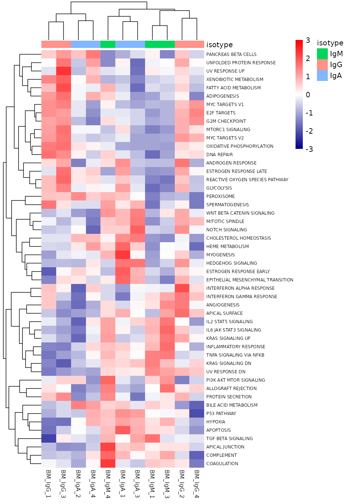
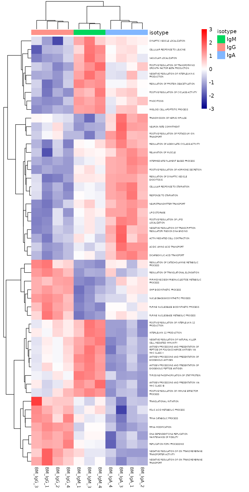
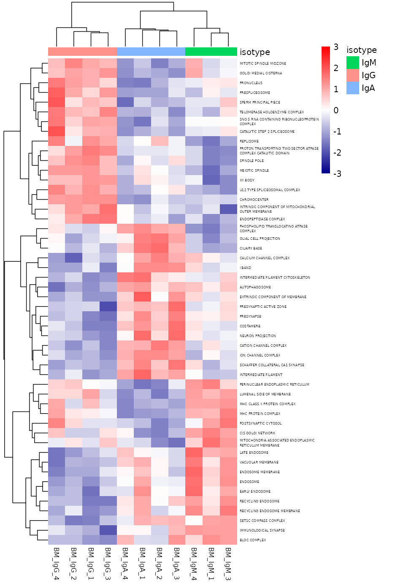
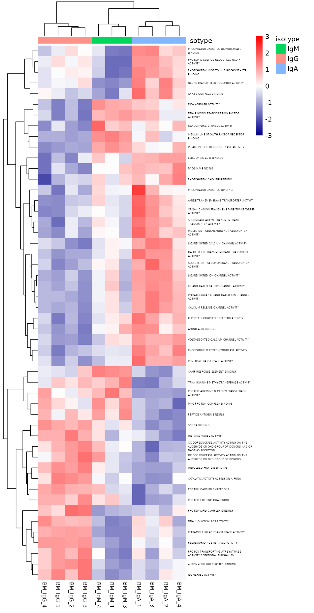
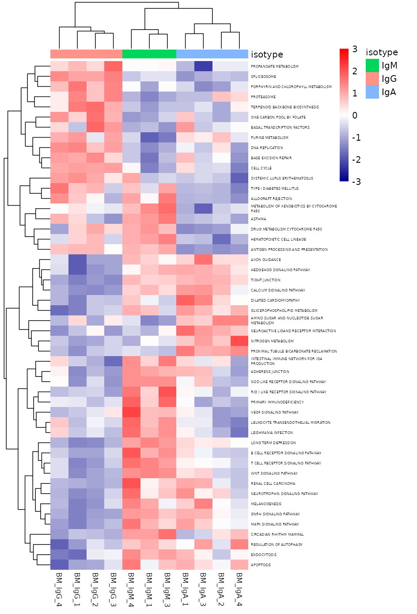
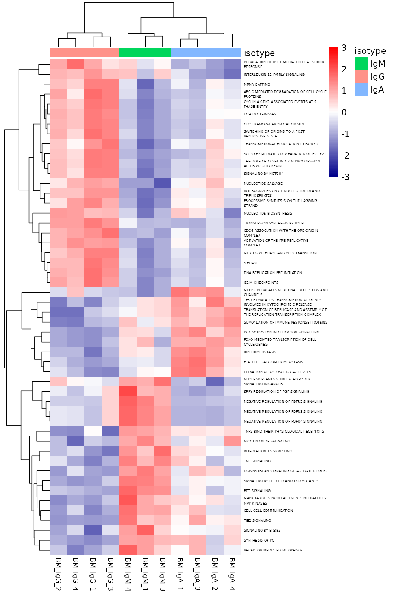
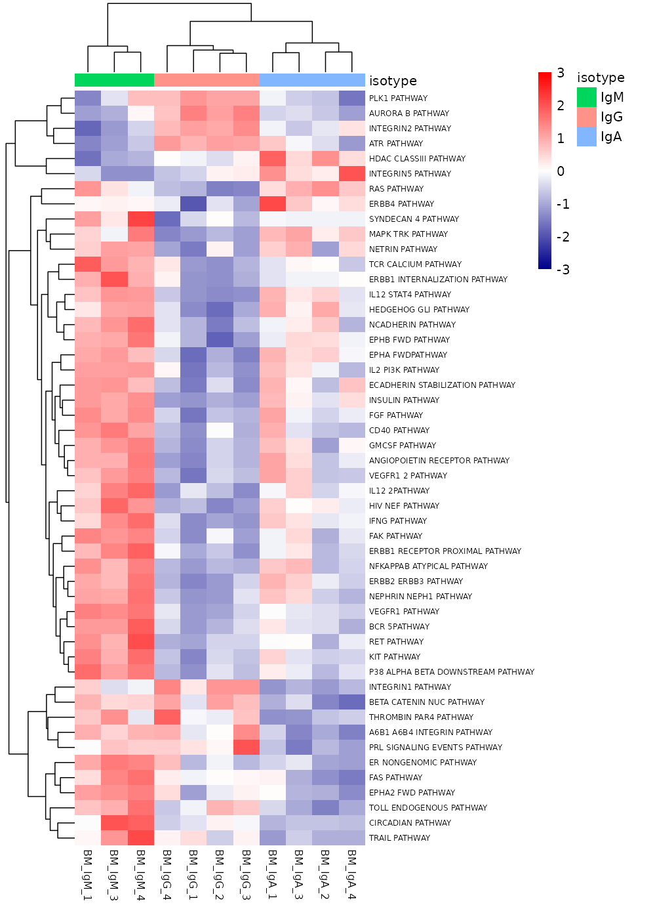

Sample-level GSVA on ComBat-seq then VST (protecting the grouping variable; DESeq2 still uses raw counts with batch in the design). This is not ranked-list GSEA: every gene set is scored in every sample, independently of clusterProfiler / fgsea (those pages are unchanged). Organism: mouse.
HALLMARK (~50 sets) is always included and the heatmap shows every scored set.
GO / KEGG / REACTOME / PID have thousands of signatures, so a
GSEA-style padj filter does not help: GSVA assigns a score
to every set, and many would still pass a cutoff. Instead every set is
scored (full CSV) and the heatmap keeps the top 50
pathways whose sample scores differ most across isotype
(Kruskal–Wallis; variance if the test is undefined). Change the number
with gsva_n_heatmap.
Reproduce GSVA with this package module:
gsva_out <- run_gsva_pipeline(dds_qc, var = "condition")All scored HALLMARK gene sets (row-scaled GSVA scores).

All 4297 sets were scored; heatmap shows the top 50 by Kruskal–Wallis
p-value vs isotype (table below is the same ranking).

All 580 sets were scored; heatmap shows the top 50 by Kruskal–Wallis
p-value vs isotype (table below is the same ranking).

All 831 sets were scored; heatmap shows the top 50 by Kruskal–Wallis
p-value vs isotype (table below is the same ranking).

All 174 sets were scored; heatmap shows the top 50 by Kruskal–Wallis
p-value vs isotype (table below is the same ranking).

All 1086 sets were scored; heatmap shows the top 50 by Kruskal–Wallis
p-value vs isotype (table below is the same ranking).

All 188 sets were scored; heatmap shows the top 50 by Kruskal–Wallis
p-value vs isotype (table below is the same ranking).
